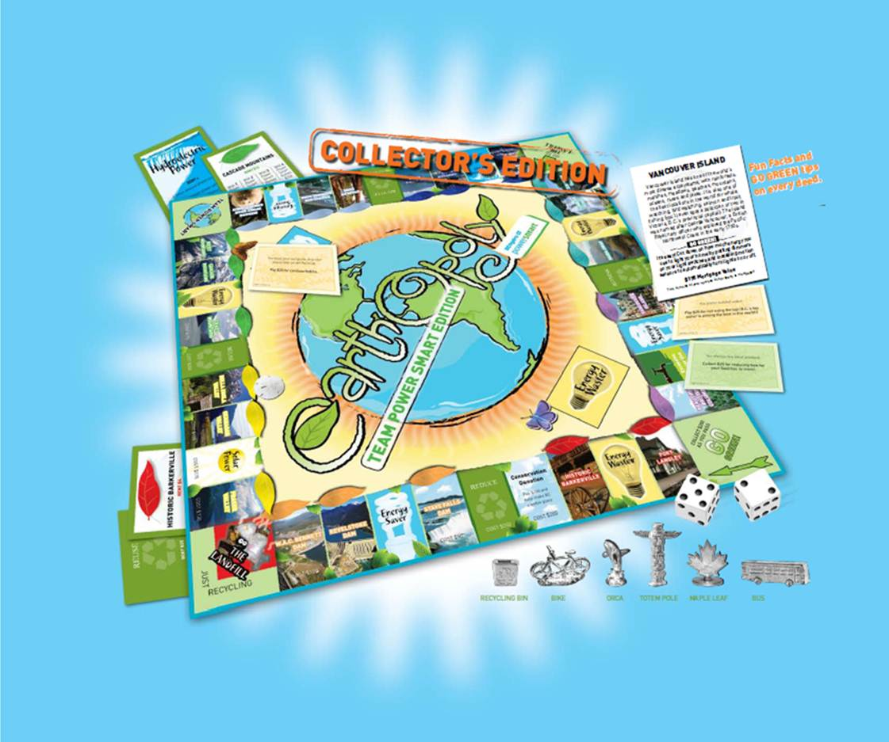
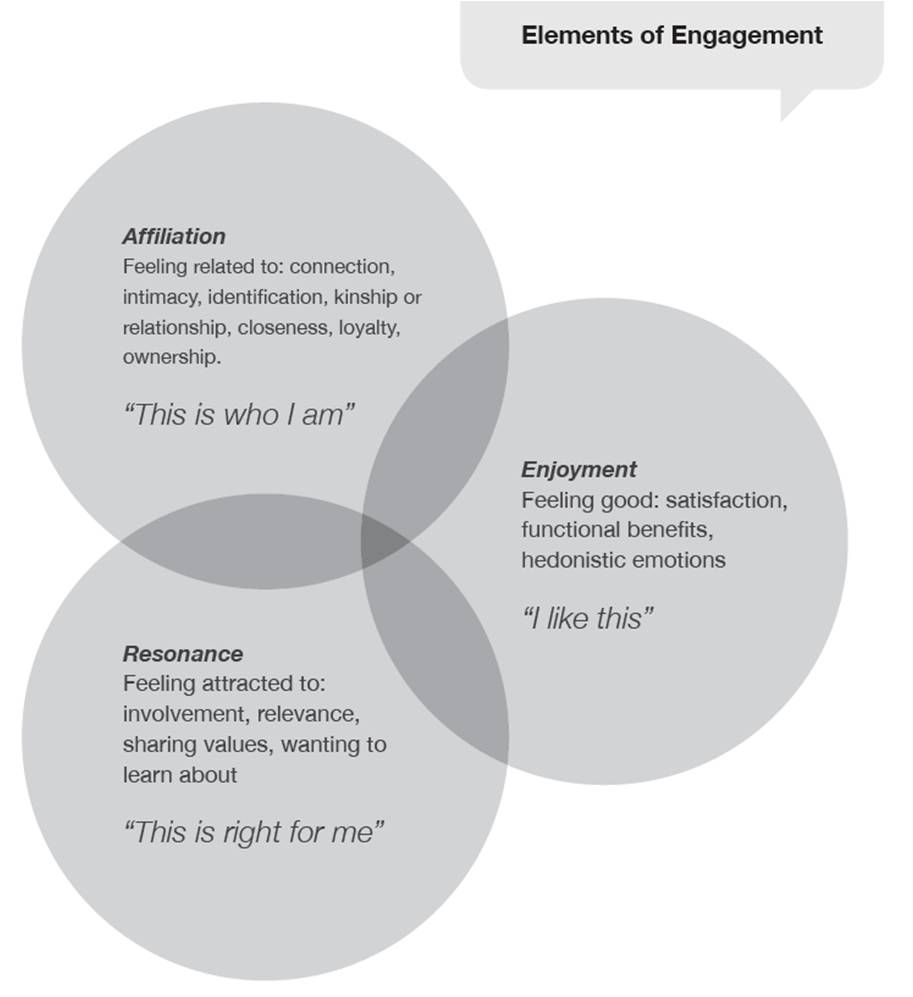

Tools Used
- Building Motivation Over Time
- Feedback
- Financial Incentives and Disincentives
- Norm Appeals
- Obtaining a Commitment
- Overcoming Specific Barriers
- Prompts
Initiated By
BC Hydro
Results
- Significant changes in 25 target behaviours
- 46 GWh electricity consumption over six fiscal years.
Webinar Transcript and Post-Webinar Q&A
Landmark Case Study
Power Smart Residential Behavioural Program
This program is a great example of applying a “loyalty group” approach to progressively engage participants in changing behaviours. Because electricity and electricity conservation tend to be a low priority for many British Columbians, BC Hydro has connected energy conservation to the things that people care about through an opt-in loyalty model and a focus on story-telling, co-creation, challenges and individualized feedback. Regular communications repeatedly drive participants back to their Members’ Tool Box, which serves as a ‘hub’. Ultimately, the product mix is designed to increase participant engagement levels on three dimensions: affiliation, (“this is who I am”), resonance (“this is right for me”) and enjoyment (“I like this”). Multi-year impact data. Designated a Landmark case study in 2011.
Background
Low-priority, repetitive behaviours are particularly difficult to promote. People are less interested in doing the behaviours because they are a low priority, and the actions must be developed into new habits that last over time. For these reasons, utilities have traditionally focused on one-time, product-focused actions that residential customers can take – for example, getting rid of a second fridge, insulating a home, or buying more energy efficient appliances.
BC Hydro, the public utility that provides electricity throughout British Columbia, has a long track record of leadership in evidence-based residential energy conservation programs. In 2007, it conducted a Conservation Potential Review identifying potential electricity savings over a 20 year time horizon, in the residential, commercial and industrial sectors. Repetitive, ongoing behaviours that people could take to habitually save energy within their daily routines without sacrificing their “lifestyle quality” were included for the first time. Examples of these opportunities include maintaining weather-stripping, setting heating and appliance temperatures appropriately, hanging out laundry to dry rather than using an electric dryer, and turning devices off when they are not being used.
Opportunities for behavioural energy savings were estimated to be between 720 GWh/yr and 1,377 GWh/yr by F2026. As a result of this report BC Hydro started developing a ‘behavioural’ strategy. BC Hydro also assessed the relative importance of key motivators and barriers for targeted energy conservation behaviours and carried out a psychographic customer segmentation analysis.
As part of the behavioural strategy, the Power Smart Residential Behavioural Program was launched in October of 2008 under the Team Power Smart banner.
Early program research indicated a strong correlation between a participant household’s recent energy savings and its level of engagement. The program therefore focused on first getting customers to join, and then establishing long-term relationships with participants and deepening their engagement with the program and energy conservation over time.

Map courtesy of Natural Resources Canada
Setting Objectives
Team Power Smart prioritized its target behaviours based on impact, probability of adoption, and penetration, as articulated by McKenzie-Mohr’s cbsm model (2011). The conservation potential (realistic target) for each behaviour was calculated for each year.
However, formative research revealed some high-priority shared motivators and barriers across the 25 targeted behaviors. BC Hydro thought these could be addressed cost-effectively together, whereas many of the unique barriers would be harder to overcome and better left until the program was established. It also thought that engaging participants in a range of behaviors would help frame and build momentum for energy conservation and a culture of energy efficiency. Accordingly, BC Hydro first focused its efforts on all 25 targeted behaviours.
Example – lowering the heat at night. For example, BC Hydro wanted more of its residential clients to lower the heat at night – manually or using a programmable thermostat.
While the program did not set specific measurable objectives for each behaviour, it did set annual targets for the energy reduction to be cumulatively achieved through all of the behaviours, starting at 1.8 GWh for fiscal 2009 (which was a partial year), and rising to 4.9 GWh by 2013.
Getting Informed
BC Hydro has a strong track record of designing its programs based on customer-focused research, which involves province-wide surveys as well as focus groups and contextual customer interviews. For example, surveys with similar wording were used to track motivators and barriers every year from 2007 to 2010, then again in 2012.

Communications focused on a number of key benefits identified from the research, one of which is pride of province and its natural heritage
Delivering the Program
Electricity and electricity conservation tend to be a low priority for many British Columbians, partially because of B.C.’s abundance of resources (hydro) and relatively low electricity rates (among the lowest in North America). BC Hydro therefore connected the topic of energy conservation (low involvement) to the things that people cared about (high involvement) through an opt-in loyalty model as the vehicle to drive long term behaviour change. This model allowed BC Hydro to apply permissive marketing and communicate with participants on a regular basis. It also made billing and actual consumption analysis possible on a participant basis.
The ultimate ‘product’ of the Behavioural Program was changed behaviours that provide participants with the following benefits:
- Tangible benefits, including access to the Members’ Tool Box, challenge participation, special offers, contests, member publications and all other exclusive member perks (i.e. the membership “vehicle”), lower bill
- Intangible benefits, incl. protecting the environment/Beautiful B.C., being part of a large unified effort to reduce energy footprint, making home more efficient/comfortable, etc.
- Hidden” motives, incl. norm appeal (“doing the right thing”), admiration, comfort, convenience, entertainment, excitement, fun, happiness, health, peace of mind, pleasure, popularity, recognition, romance, sympathy, etc.
The Team Power Smart membership program was the vehicle to deliver those benefits and help overcome barriers to taking action. Membership had its privileges, including the following product components :
- Convenient access to a Members’ Tool Box on bchydro.com with exclusive online tools and consumption tracking graphs
- Members-only special offers and contests
- Opportunity to participate in 12-month challenges and earn a $75 reward when reducing consumption by 10% or more during each period. In 2014 this was changed to a $50 reward when reducing consumption by 10% or more and a $25 for maintaining a reduced consumption level over the period.
- Regular communications by mail and email
- Free subscription to a member magazine and complimentary consumer magazines with newsstand value
- Invitations to occasional members-only events
- Miscellaneous exclusive offers (“Earthopoly”, Sears Home Tune-up, Blue Box sticker, etc.)
.jpg)

Regular communications repeatedly drove participants back to their Members’ Tool Box, which served as a ‘hub’. Ultimately, the product mix was designed to increase participant engagement levels on three dimensions: Affiliation (“This is who I am”), Resonance (“This is right for me”) and Enjoyment (“I like this”). Besides tangible value added member perks, the element of storytelling was strongly anchored in the product mix strategy; it helped make an emotional connection between energy conservation (low involvement) and the things that people cared about (high involvement). It also helped create a “group feeling”.

The program accepted that for most people energy efficiency is low-involvement, so it connected specific energy-efficiency behaviors with topics people were already passionate about, including health and wellness, food and drink, life and leisure, family and relationships, home and garden, and gadgets and technology.

Below are a few examples of some strategic elements that were applied to the Behaviour Program (Team Power Smart):
|
Storytelling |
• Because electricity conservation is a “low involvement” product, program design and messaging emphasized connections with people and things that participants already cared about: celebrity spokespersons, home comfort, saving money, British Columbia’s natural heritage, food and cooking, family and friends, etc. A planning grid was developed to highlight, for each behaviour change targeted, the opportunities for making these “high involvement” connections, as well as the key barriers to taking action. This grid was used for developing stories for newsletters, magazines, etc. • For similar reasons, and also to provide feedback and strengthen norm appeal, the program emphasized the sharing of personal energy conservation stories – from both average participants as well as celebrity members. These stories were used in testimonial campaigns, collateral and various publications. |
|
Regular communications |
• Prompts/reminders and challenge correspondence were sent to participants by mail and email • Besides a popular monthly eNewsletter, Team Power Smart members also received a member magazine three times a year; this member magazine was inserted in well-known consumer magazines to provide additional member value. The member magazine allowed for different “consumption time” of the information (sometimes behind a computer, sometimes leaning back on the couch). Because the selected magazines have coffee-table functionality and high pass-along rates, the inserts helped to increase the visibility of participation (norm appeal) and word of mouth communication. The magazines were selected based on high involvement topics (for example British Columbia Magazine to tap into existing interests in enjoying and preserving B.C.’s natural heritage and BC Home to tap into interests in interior design) and contained ‘lifestyle’ stories with built-in energy efficiency components. |
|
Feedback |
• Feedback on consumption and how they’re moving toward their reduction target was available in their Members’ Tool Box (as Smart Meters and In-Home Feedback were deployed, more timely and richer consumption feedback information became available) • Prompts/reminders and challenge correspondence were sent to participants by mail and email |
|
Exclusivity |
• Members-only perks provided exclusive value to members • A limited edition of “Earthopoly” (based on Monopoly) was developed exclusively for Team Power Smart (with B.C. properties, customized tokens and “Energy Waster” and “Energy Saver” cards instead of the well-known “Chance” and “Community Chest” cards). The Board game was made available to members at a discounted price. |
|
Co-creation |
• Co-creation opportunities were offered at varying degrees of effort required. An example is the annual members-only photo contest generating motivational photographs illustrating why members joined Team Power Smart and that are used in collateral, member publications, advertising, exhibitions, etc. By participating, members were saying both that they were willing to get personally involved with conservation as a cause (resonance) and that they were willing to have their images associated with the product (affiliation). Co-creation was also applied when creating stories for member publications and in testimonial advertising campaigns. |
|
Endorsements |
• Word-of-mouth was encouraged, where members acted as ambassadors and recommended the program to their friends and neighbours • The program was executed with the help of many different partners, including manufacturers, retailers, Royal B.C. Museum, Science World, etc. By collaborating (incl. providing prizing for contests, discounts, venue, joint promotions, etc.) these partners identified themselves with Team Power Smart and thus endorsed the program |
.jpg)
Picture of branded clothespegs submitted by a Team Power Smart member
Measuring Achievements
Each month, program management reviewed an updated dashboard of key performance metrics including membership growth, challenge participation and performance, energy savings, financial performance, engagement levels, and member satisfaction. A trend report was created every quarter.
BC Hydro conducted formal program impact evaluations for each fiscal year. To estimate energy savings, it compared the amount of energy used in participating households before and after the fiscal year using a quasi-experimental design. Participant and comparison households are pair matched on region, dwelling type, main space heating fuel, and rate group before being matched on annual consumption in the pre-program year. About 50,000 participating households were successfully pair matched each year. Changes in consumption for the participating households are compared with changes in consumption for the comparison households. This evaluation approach used only consumption and customer information in the Corporation’s billing system; it did not use surveys, thereby avoiding the possibility of self reporting and selection bias.
BC Hydro monitored behaviour changes through surveys, with separate samples of participants and non-participants. Such surveys introduce the likelihood of some self- reporting and selection bias. However, these data were triangulated with energy savings data from BC Hydro’s formal program impact evaluations.
Feedback
Program participants could track progress towards their challenge goals, using the Member Toolbox.
Results
The following diagram shows the increasing number of people who undertook challenges in each year of the program including 2nd and 3d challenges (shown in light green and blue).

Participants got more successful at saving energy in their challenges, as shown by the following pie charts. The chart on the left is for fiscal 2009 and the pie chart on the right is for fiscal 2014/2015. The dark green pie segment show the percentage of people who were successful with their 10% challenges, while the light green segments are those who had some savings but less than 10%.

Survey data suggest that participants gained the bulk of their evaluated savings through changes in four main groups of behaviors: space heating, space cooling, laundry, and dishwashing. Team Power Smart members tended to outperform non-members across the full spectrum of in-home conservation behaviours. Although some differences are relatively small in percentage points, nearly all are statistically significant.
Example – lowering the heat at night. For example, at the 2009 baseline only 63% of households always or usually turned down the temperature at night manually or using a programmable thermostat. By 2012 that had increased to 71% for non-members and to 79% for members (about twice the increase as for non-members.)
As a result of these behaviour changes, Team Power Smart reduced electricity consumption by 46 GWh from fiscal 2009 to the end of fiscal 2015. Further, average energy savings per year increased, with the share of completed challenges resulting in savings rising from 41% in October 2008 to ~65% in fiscal 2014. Although the largest savings came from households undertaking their first challenges, significant savings were also been realized by those in their second and third challenges and these savings also increased each year.
Contacts
For questions about this program please send an email to: teampowersmart@bchydro.com
Notes
Landmark Designation
The program described in this case study was designated in 2011.
Designation as a Landmark (best practice) case study through our peer selection process recognizes programs and social marketing approaches considered to be among the most successful in the world. They are scored by a peer selection panels based on impact, innovation, replicability and adaptability.
The panel that designated this program consisted of:
- Devin Causely, Federation of Canadian Municipalities
- Melissa Klein, US EPA’s ENERGY STAR® Program
- Arien Kortland, BC Hydro
- Doug Mckenzie-Mohr, McKenzie-Mohr Associates
- Edward Vine, Lawrence Berkeley National Laboratory
- Dan York, ACEEE